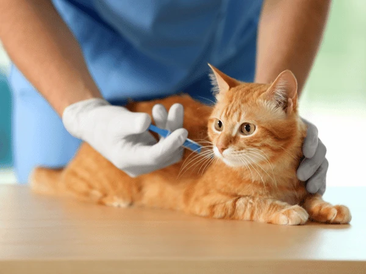
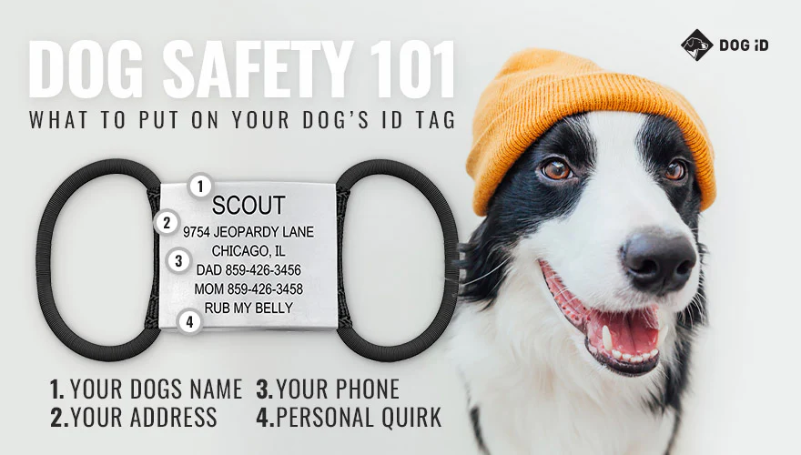
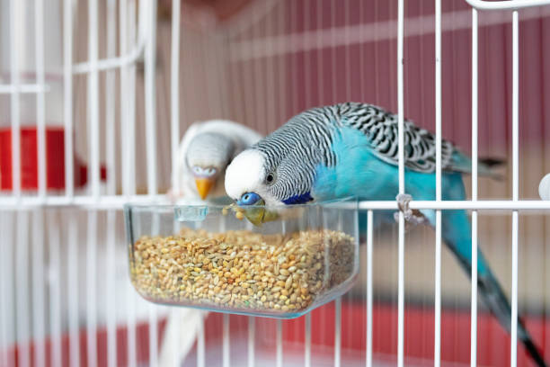
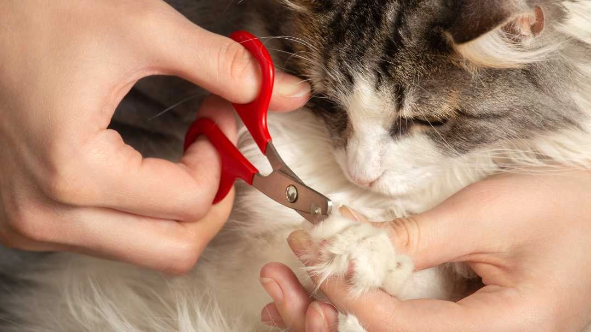

PAW PRINT
Welcome to the world of pets

As a pet parent you want to do everything you can to care for your pet; this involves regular, everyday activities to ensure they stay happy and healthy. Practice these ten responsible pet care tips year after year for a lifetime of happy and healthy cats and dogs.
Responsible pet ownership starts with regular visits to the veterinarian. Given their shorter-than-human lifespan, your dog or cat should be getting a checkup at least once or twice a year. Depending on your pet's vaccination schedule, they may go more frequently when they're young, but establishing and maintaining good pet health means keeping up with vet visits as they age.

Vaccinating your pets is a vital component of responsible pet care. Soon after welcoming your new pet into your home, schedule an immunization appointment. Vaccinations help prevent diseases such as rabies, Lyme disease, and distemper for dogs, and feline herpes virus and rabies for cats.
If the unthinkable happens and your little guy or gal gets lost — youngsters in particular are prone to dashing out the door — having proper identification is key to a happy ending. Start with a safe collar, and a tag that contains all of your contact information. Microchipping is also advisable as it ensures your pet can be identified even if their collar falls off.
Sterilizing your pet prevents a host of health problems, including complicated pregnancies, and reduces the number of homeless animals. Spaying and neutering reduce the risk of various cancers and unwanted behaviors such as aggression and roaming in dogs.
Provide your pets with fresh water and healthy food. Choose a pet food formula that is appropriate for your pet’s age, health conditions, and activity level. A balanced diet helps ensure your pet has the energy and nutrients they need for optimal health.
Provide good hygiene habits at home by brushing your pet's teeth, combing their coats, and trimming their nails. Consistent grooming helps keep your pet in tip-top shape and is a vital part of responsible pet care.
Ensure your pet has a safe, cozy place to rest. Update dog beds or litter boxes, check for hazards, and secure cords or plants that might harm your pet.

Training and socializing your pet helps build a strong bond. Start with basic obedience training and socialization to ensure your pet is well-adjusted and happy in social situations.

When visiting a dog park, be mindful of proper etiquette. Follow the rules posted at the park and always ensure your dog is vaccinated before interacting with other animals.

Playtime is important for your pet’s health, but ensure toys are safe and well-maintained. Avoid worn-out toys that could pose choking hazards or cause injury, and replace them regularly.
Remember, these tips aren't just for pet holidays — make them part of your regular pet care routine, and you and your pets will benefit for a lifetime!